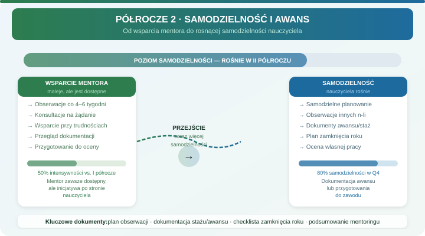

Zadania mentora
- Sprawdzić dokumentowanie dorobku zawodowego, jeżeli dotyczy.
- Zaplanować obserwację i omówienie lekcji.
- Zweryfikować przygotowanie do klasyfikacji rocznej.
- Ustalić dalszy zakres wsparcia po pierwszym roku.
Etap P2
Cel: uporządkować dokumenty awansu, korzystać z obserwacji lekcji i przygotować zamknięcie roku.

Wpisz: obserwacje, informację zwrotną, dokumenty awansu, sprawy do zamknięcia i cel rozwojowy na kolejny rok.
Po obserwacji nauczyciel wybiera jedną praktykę do testowania przez 2-3 tygodnie. Mentor wraca do tego tematu na kolejnym spotkaniu.
Strona nie rozstrzyga wymagań prawnych. Mentor pomaga uporządkować materiały, a aktualne wymogi potwierdza dyrekcja, kadry lub właściwe źródło prawne.